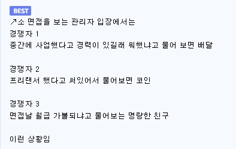

개좆소면 저런 스펙갖고오면 금방나간다고 안뽑음 그래서 명량한 사람이 뽑힐수있음!
+ 나이어린 ㄷㄷ
신입자리는 나이 어리고 인상,성격 좋아보이고 나름 열심히한 스펙(1기사,1산기)면 최고임 ㅋㅋ
근데 개좆소에 저런 스펙이 지원함?
대기업조차 나이가 깡패라며
페이 좋은 덴 신입 뽑아도 경력직 우르르 몰리더라
대학원 나왔는데 우리랩 작년 박사 졸업생 셋 중 실적 뛰어난 둘은 취업 실패해서 미국 포닥갔고 졸업요건 간신히 채운 명랑한 애는 대기업 취업함 ㅋㅋ
이유가 뭘까?
나알아 관상
진짜 이거일것같아서 무섭다
관상이라기엔 나머지 둘도 착하고 성실하고 엘리트같이 생겨서 외모로 불이익 받을건 없었는데... 그냥 합격한 애가 외향적이라는 차이밖에는 모르겠네
바로 그거임
진짜 사람 외향적이고 싹싹하면 추가 점수 있음
관상가가 면접관으로 있는경우도 있다
Fit
오새 신입 단군이레 최고 자격좋다 하던데 막상 까보면 이력서용 능력도 없는 자격이 대부분에 실무감각은 기존보다 더 떨어지는 애들이 많던데 예전 쌍기사 아빠랑 딸 보는 느낌들었음
아 진짜 능력좋은 사람도 취업힘든건 맞음 다만 대부분 본인들이 생각하는거 많큼 능력이 대단하지는 않다는거 예전엔 그보다 못해도 취업했긴 했지만
그 이력서용 능력도 없는 자격 때문에 떨어질까봐 목매다는게 큰듯 그거 딸 시간에 유사직무 인턴이나 이미 비슷한곳 정식 취업했어서 경력 쌓고 온 것보다 못한 수준인데
평가할 스펙은 한정적인데 지원자만 몰리니 공무원 한국사 시험처럼 지엽적인 거까지 평가할 수밖에 없고, 전체적인 공부량은 늘어났어도 그 한국사 공부에 쓰인 노력이 직무에 도움되느냐고 물으면 아닌 것과 같은거지
그럼 결국 요즘이 턱이 높은 거 맞잖아
신입한테 기대가 과하다
그 능력을 뭘로 시험보고 알아볼거냐가 문제지,
사실 회사에서 제일 필요한건 제때 제때 필요한걸 해주는 눈치 있는 인재인데, 그런 능력은 알바같은 사회생활 많이 해본 애들이 잘함. 요즘 알바하느라 시간 날리면 안 뽑히자나. 그게 무넺
사회 초년생 신입이 실무감각이 어딨어 ㅅㅂ
개틀딱마인드
경력없는 신입은 진짜 어케 뚫냐
경쟁자들이 금방 나갈 거 같은 고스펙들이라 오히려 자격증 세네개만 있는 날 뽑아주길 바랄 뿐
그 자격증조차 없으면 면접까지도 못가니까 0%가 아니다..!
1,3번을 뽑아서 어따씀 한두달뒤면 퇴사할듯
요새 입사하는 인력들 보면 점점 학력수준은 높아지긴 하는듯..
인구가 줄어서 대학들어가기 쉬워져서 그렇다고도 하긴 하는데.. 구직이 힘들어진 영향도 많겠지.
그리고 예전에는 입사하면 다들 오래 다니는 분위기였는데 최근 몇년간 입사한 인력들은 많이들 갈아타는듯.
이직하더라도 보통 돌아다니면서 인사는 돌리고 나갔는데 요새는 사수랑 몇명 같이 일하는 사람만 구두로 얘기하고 그냥 가더라. 문화가 다르다고 느꼇음.
나도 기사 자격증 4개 들고 면접봤는데 앞에 두사람 기능장에 기사 자격증 3개라 그냥 면접 때 밝게 대답한 청년됨